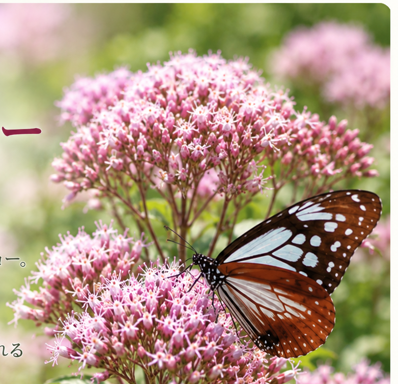

わが家の生育記録
2025年
2025年 生育記録 植え付けから蝶の訪問、花後の成長まで
8月9日に5ポットを植え付け、開花した花にはナミアゲハが訪れました。9月20日には最初の花がほぼ終わり、新しい葉が育っていました。
2025年の記録をまとめて見る →2026/09/05
花後の新芽から、再び蕾を確認
8月末に花がらだけを切除し、古い茎・節と小さな芽を残して観察。新葉・新芽が伸び、その先に新しい蕾を確認しました。地植え・プランターの挿し木株の成長も記録しています。
この記録を見る →2026/10/04
二次開花が続き、一次開花より小さな花房にピンク色の花が咲いています。
一次開花のような大きな花房にはならず、小さなまとまりの中で開いた花と蕾が混在し、周囲では明るい緑色の葉も広がっています。
この記録を見る → 0 件